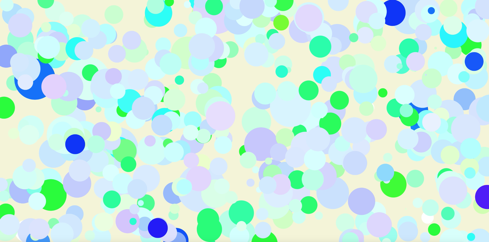
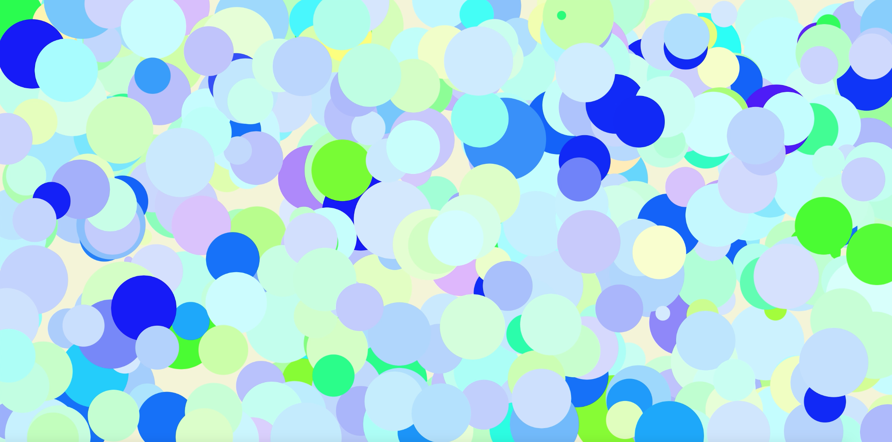
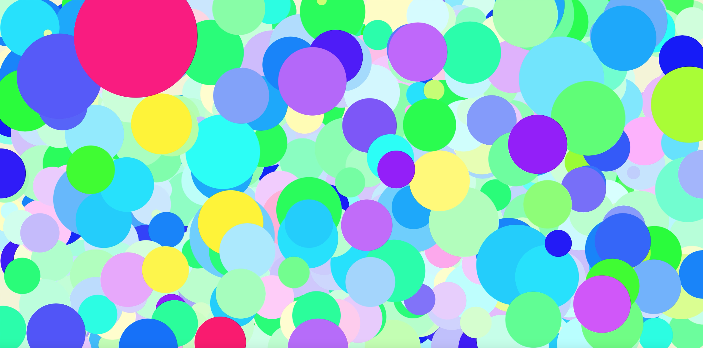

Get information from your environment
Using physical sensor(pressure sensor, accelerometer)&Digital piano midi information,
represent music as a live web visual piece.
Every note of the piano is represented by HSB color code, and velocity(information) is represented
by the size of circles. Also pedal information turns into the brightness of color, which would be
softer when pressed.
This can be another way to enjoy music for people who cannot enjoy the music by listening, too.
Sorry for the mistakes!😹
middle note, low velocity, high pedal pressure
middle note, middle velocity, middle pedal pressure
wide range of note, wide range of velocity, normal pedal pressure
